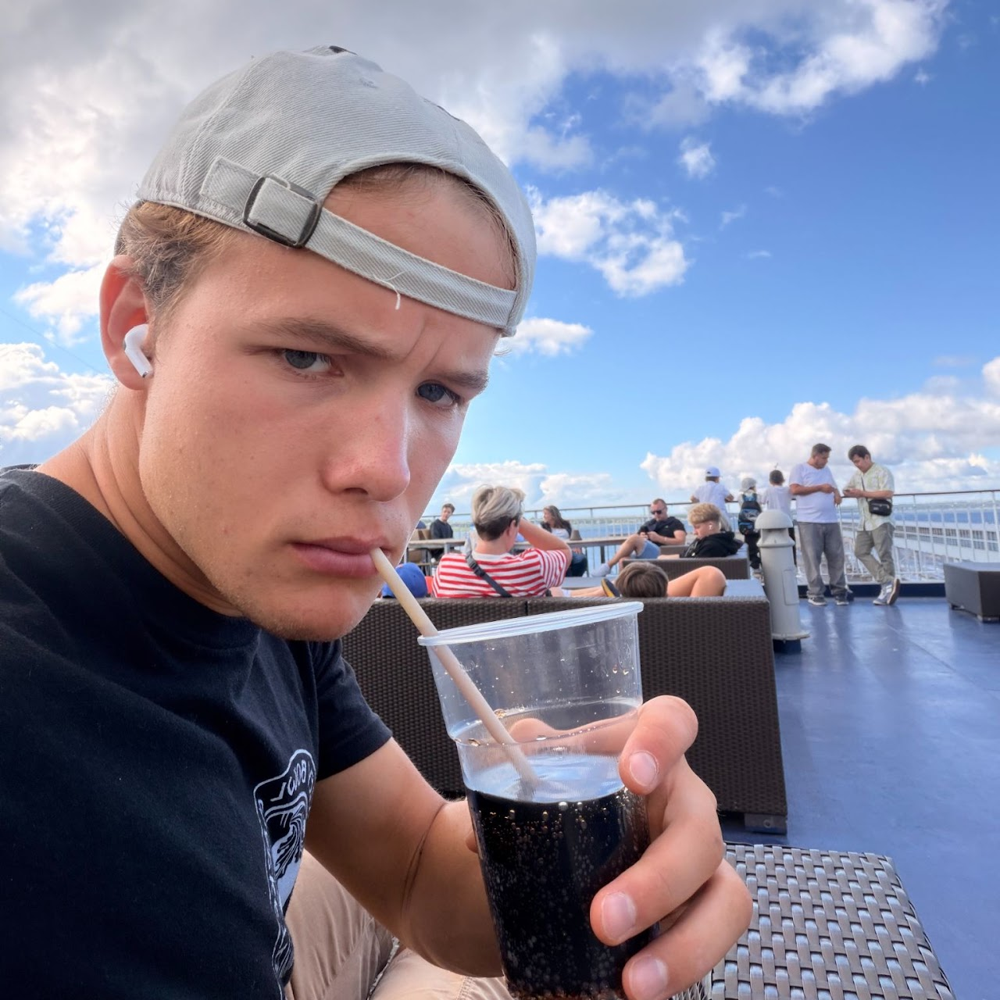

Project Topic
This project investigates how secondary kitchen burdens—specifically post-cooking clean-up and time constraints—discourage home meal preparation and drive consumers toward less nutritious dine-out options.
Team Members

Juan Rubio
Dylan Pearson
Tala Alshalfan

Lars Antoniak
James Phi
Refined Problem Description
In-Scope Boundaries
- Perceived post-meal clean-up workload and kitchen labor
- Post-cooking time scarcity during daily household routines
- Behavioral shifts from home-prepared meals to dining out
- Cost-versus-nutrition trade-offs in household meal planning
Out-of-Scope Boundaries
- Commercial restaurant dishwashing infrastructure
- Municipal solid waste collection and landfill logistics
- Supply chain economics of commercial dining options
- Gallup. Obesity Rate Declining in U.S. Available at: https://news.gallup.com/poll/696599/obesity-rate-declining.aspx
- Oleschuk BM, Choi HY, Ellison B, Pflugh Prescott M. Associations between cooking self-efficacy, attitude, and behaviors among people living alone: A cross-sectional survey analysis. Appetite. 2023 Oct 1;189:106999. doi: 10.1016/j.appet.2023.106999. Epub 2023 Aug 8. PMID: 37562756.
"How Might We...?"
User Persona

Taylor Vance, 29
Busy Professional living alone
Core Pain Points & Friction
- Exhaustion following post-prep clean-up routines
- Limited counter space cluttered by food scraps during cooking
- Guilt over spending money on less-nutritious takeout alternatives
Primary Motivations & Goals
- Maintain a healthy lifestyle within a tight daily schedule
- Minimize dish & countertop maintenance friction
- Seamlessly transition from cooking to dining without immediate clutter
Abstract Laddering
Promote sustained healthy living & eliminate meal decision fatigue
Empower individuals to cook at home consistently without feeling burdened by post-meal time scarcity.
Frictionless, instant kitchen waste management system
Integrate scrap disposal directly into primary prep surfaces so workspace remains clean during prep.
Sliding countertop mechanism with sealed compost chamber
Ball-bearing slides, silicone odor seals, and removable machine-washable scrap bins beneath counter space.
Final Creative Matrix
| Categories / Enablers | Mechanical / Spatial Integration | Material & Hygiene Seals | Behavioral Incentives |
|---|---|---|---|
| Pre-Meal Prep Phase | Sliding Countertop Track Smooth dual-direction slider exposing hidden prep bin. | Silicone Seam Gasket Airtight seal preventing debris from falling into cabinet tracks. | Zero-Step Sweep Push scraps straight off board into bin without picking up. |
| Post-Cooking Phase | Removable Storage Core Quick-release bin insert for effortless empty into compost. | Antimicrobial Lining Dishwasher-safe polymer interior preventing bacteria buildup. | Instant Closure Slide close counter to immediately hide mess while eating. |
Collaborative Plan
Team Goals
Create a working product to help users easily clean cooking messes in the kitchen while learning the human-centered design process.
Procedures & Decision Making
Democratic decision-making; asynchronous and live collaboration via Group Chat, Shared Google Drive, Email, and Zoom.
Team Diversity Synergy
3 engineering majors (ME & IEOR) supply technical expertise; 2 cognitive science majors offer human experience insight.
| Phase | Key Deliverables | Assigned Lead(s) | Timeline | Status |
|---|---|---|---|---|
| 1. Scoping & Setup | Problem formulation, Gallup citations, site framework | All Members | Week 1 - 2 | Completed |
| 2. User Discovery | Persona modeling & abstract laddering (Wk8) | Juan & Lars | Week 3 - 4 | Completed |
| 3. Creative Matrix | Synthesis matrix & enabler evaluation (Wk9) | Tala, James & Dylan | Week 5 - 6 | In Progress |
| 4. CAD & Prototype | Makerspace slider mechanism & component fabrication | Dylan & James | Week 7 - 8 | Upcoming |
| 5. Evaluation & Pitch | Product testing, site updates, and final presentation | All Members | Week 9 - 11 | Upcoming |